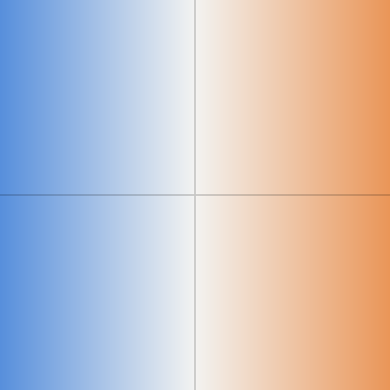
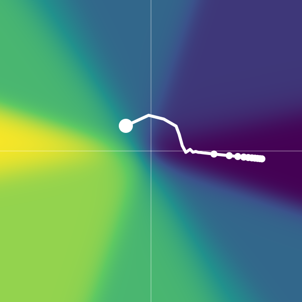

Kapitel 1
Ein erstes Modell
In diesem Kapitel wollen wir ein Programm entwickeln, das zwischen zwei Sorten von Punkten unterscheiden kann. Wir beginnen mit einem einzelnen Neuron und bauen dann aus Schichten von Neuronen ein kleines Netz, das seine Gewichte selbst findet.
Zwei Sorten von Punkten
Gegeben sei eine Ebene mit den Koordinaten
und , jeweils von -6 bis +6. In diese Ebene setzen
wir Punkte zweier Sorten: orange und blau. In den Programmen wird die
Sorte eines Punkts durch eine Zahl dargestellt: 1
für orange und -1 für blau.
Ein Modell ist eine Funktion, die aus den Koordinaten und eines Orts in dieser Ebene eine Vermutung über die Sorte eines Punkts an diesem Ort berechnet, einen Wert zwischen -1 und +1. Bei -1 ist sich das Modell sicher, dass dort ein blauer Punkt liegt, bei +1 sagt es mit Sicherheit einen orangen voraus. Werte dazwischen drücken Unsicherheit aus: Das Vorzeichen sagt, welche Sorte das Modell eher vermutet, und je näher der Wert an 0 liegt, desto unsicherer ist es; bei 0 kann es sich nicht entscheiden.
Eine solche Funktion könnten wir beliebig formulieren, etwa

Sie ist am rechten Rand +1, am linken -1 und auf der senkrechten Achse 0: Rechts vermutet sie orange, links blau, und je näher zur Mitte, desto unsicherer ist sie. Oder

Sie ist im Mittelpunkt +1, denn , und in den vier Ecken -1, denn dort ist und ; auf dem Kreis mit dem Radius 6 um den Mittelpunkt ist sie 0. Ob eine solche Funktion gut vermutet, hängt von den Punkten ab: Die erste passt zu Punkten, die rechts orange und links blau sind, die zweite zu einer orangen Scheibe in einem blauen Ring.
Maschinelles Lernen denkt sich die Funktion nicht aus. Es legt die Form der Funktion fest und lässt Zahlen darin offen, und ein Programm findet die Zahlen aus Beispielen, Punkten, deren Sorte bekannt ist. Dieses Finden nennt dieses Buch Lernen, und eine Funktion mit gefundenen Zahlen ein trainiertes Modell.
Ein Neuron
Die einfachste Form einer solchen Funktion ist ein Neuron. Es multipliziert jede seiner Eingaben mit einer eigenen Zahl, seinem Gewicht, zählt alles zusammen und addiert noch eine Zahl, seinen Bias:
Wo positiv ist, vermutet das Neuron orange, wo es negativ ist, blau. Die Punkte, an denen genau 0 ist, bilden eine Gerade; ein Neuron teilt die Ebene also durch eine Gerade: Die Gewichte drehen sie, der Bias verschiebt sie. Hier ist ein Neuron mit Gewichten, die wir gewählt haben, 1 und 1 und einem Bias von 0, und es betrachtet sechs Punkte:
; One neuron with weights we chose: it adds up its inputs, each times its
; weight, plus a bias, and the sign of the sum is its guess.
define Point(x: f64, y: f64, kind: f64)
var points Array[Point]()
points.add(Point(2.0, 1.5, 1.0))
points.add(Point(1.0, 3.0, 1.0))
points.add(Point(0.5, 0.0 - 2.5, 1.0))
points.add(Point(0.0 - 2.0, 0.0 - 1.0, 0.0 - 1.0))
points.add(Point(0.0 - 1.0, 0.0 - 3.0, 0.0 - 1.0))
points.add(Point(0.0 - 3.0, 1.0, 0.0 - 1.0))
let w1 1.0
let w2 1.0
let b 0.0
for p in points
{
let z w1 * p.x + w2 * p.y + b
let guess if z > 0.0: 1.0 else 0.0 - 1.0
let verdict if guess = p.kind: "right" else "wrong"
print "(`p.x`, `p.y`) is `p.kind`: z = `z`, the guess `guess`, `verdict`"
}(2, 1.5) is 1: z = 3.5, the guess 1, right
(1, 3) is 1: z = 4, the guess 1, right
(0.5, -2.5) is 1: z = -2, the guess -1, wrong
(-2, -1) is -1: z = -3, the guess -1, right
(-1, -3) is -1: z = -4, the guess -1, right
(-3, 1) is -1: z = -2, the guess -1, rightFünf von sechs stimmen. Der Punkt (0.5, -2.5)
ist orange, liegt aber unterhalb der Geraden
. Setz w2 auf 0
und führ es noch einmal aus: Die Gerade wird zur senkrechten
Achse, , und alle sechs stimmen. Die Gerade
zu drehen, indem man ein Gewicht ändert, bis die Vermutungen stimmen,
ist genau das, was Lernen tun wird, nur von selbst.
Wie falsch
Um die Gewichte von selbst zu ändern, braucht ein Programm eine Zahl, die sagt, wie falsch das Neuron liegt, eine Zahl, die kleiner wird, wenn das Neuron besser wird. Die falschen Vermutungen zu zählen taugt dafür nicht: Eine kleine Änderung eines Gewichts ändert meist gar keine Vermutung, also sagt die Zahl nicht, in welche Richtung zu drehen ist.
Deshalb wird die Summe des Neurons zuerst von einer glatten Funktion in eine Zahl zwischen -1 und 1 gedrückt, hier vom Tangens hyperbolicus:
So antwortet das Neuron, wie es zu Beginn des Kapitels von einem Modell verlangt war: nahe +1 oder -1, wo es sich sicher ist, nahe 0, wo nicht. Eine solche Funktion ist die Aktivierung des Neurons und seine Antwort. Jetzt lässt sich die Antwort mit der Sorte vergleichen, die der Punkt wirklich hat:
Das ist der Fehler eines Punkts (englisch loss): 0, wo die Antwort genau die Sorte ist, größer, je weiter sie davon weg ist, und jede kleine Änderung eines Gewichts ändert ihn ein wenig. Der Fehler des Modells ist der Mittelwert der Fehler aller Punkte.
Bergab
Stell dir den Fehler als Landschaft vor. Jede Wahl der drei Zahlen , und ist ein Ort darin, und der Fehler dort ist seine Höhe. Lernen heißt bergab gehen. Wo es bergab geht, lässt sich für jedes Gewicht einzeln ablesen: Wie stark ändert sich der Fehler, wenn sich das Gewicht ein wenig ändert? Das ist die Ableitung nach dem Gewicht, geschrieben .
Der Fehler hängt nicht direkt von ab. Er hängt von der Antwort ab, die Antwort von der Summe und die Summe von . Jedes Glied dieser Kette hat eine Steigung, die leicht zu sagen ist:
der Fehler nach der Antwort: ;
die Antwort nach der Summe, die Steigung von tanh: ;
die Summe nach dem Gewicht: , die Eingabe, die das Gewicht multipliziert.
Die Kettenregel sagt: Die Steigung der ganzen Kette ist das Produkt der Steigungen ihrer Glieder.
Für ist der letzte Faktor , für den Bias 1. Über alle Punkte zusammengezählt und durch ihre Anzahl geteilt, sind diese Ableitungen der Gradient: die Richtung, in der der Fehler am schnellsten steigt. Ein Schritt des Gradientenabstiegs bewegt jedes Gewicht ein wenig in die andere Richtung,

wobei die kleine Zahl die Lernrate ist. Das Programm unten lässt das Neuron des letzten Abschnitts bei Gewichten beginnen, die schlecht raten, und macht hundert solche Schritte:
; One neuron learns: it starts from weights that guess badly, measures how
; wrong it is, and moves each weight a little the way that makes it less so.
define Point(x: f64, y: f64, kind: f64)
; A number shown to three places.
function shown(v: f64) returns f64
{
(v * 1000.0).round_even() / 1000.0
}
var points Array[Point]()
points.add(Point(2.0, 1.5, 1.0))
points.add(Point(1.0, 3.0, 1.0))
points.add(Point(0.5, 0.0 - 2.5, 1.0))
points.add(Point(0.0 - 2.0, 0.0 - 1.0, 0.0 - 1.0))
points.add(Point(0.0 - 1.0, 0.0 - 3.0, 0.0 - 1.0))
points.add(Point(0.0 - 3.0, 1.0, 0.0 - 1.0))
let n points.length as f64
var w1 0.0 - 0.5
var w2 0.5
var b 0.0
let rate 0.1
var step 0
while step <= 100
{
; how wrong it is, and which way each weight should go
var loss 0.0
var right 0
var g1 0.0
var g2 0.0
var gb 0.0
for p in points
{
let a tanh(w1 * p.x + w2 * p.y + b)
let e a - p.kind
loss := loss + 0.5 * e * e
if a * p.kind > 0.0
right := right + 1
let dz e * (1.0 - a * a)
g1 := g1 + dz * p.x
g2 := g2 + dz * p.y
gb := gb + dz
}
if step % 10 = 0
print "step `step`: loss `shown(loss / n)`, `right` of 6 right"
w1 := w1 - rate * g1 / n
w2 := w2 - rate * g2 / n
b := b - rate * gb / n
step := step + 1
}
print "w1 `shown(w1)`, w2 `shown(w2)`, b `shown(b)`"step 0: loss 0.941, 2 of 6 right
step 10: loss 0.325, 5 of 6 right
step 20: loss 0.112, 5 of 6 right
step 30: loss 0.06, 6 of 6 right
step 40: loss 0.043, 6 of 6 right
step 50: loss 0.033, 6 of 6 right
step 60: loss 0.027, 6 of 6 right
step 70: loss 0.023, 6 of 6 right
step 80: loss 0.02, 6 of 6 right
step 90: loss 0.018, 6 of 6 right
step 100: loss 0.016, 6 of 6 right
w1 1.158, w2 0.022, b 0.3Der Fehler fällt von Schritt zu Schritt, und nach dreißig
Schritten stimmt jeder Punkt. Die gefundenen Gewichte liegen nahe bei
denen, die wir von Hand gefunden haben: w2 ist fast
0, die Gerade fast die senkrechte Achse. Das for
über die Punkte zählt den Gradienten zusammen; Scaly darf seine
Runden auf mehreren Kernen ausführen, und eine Summe von
Gleitkommazahlen kommt trotzdem gleich heraus, weil sie in der
Reihenfolge der Punkte gefaltet wird.
Bessere Eingaben
Ein Neuron teilt die Ebene durch eine Gerade, und manche Punkte kann keine Gerade teilen. Leg eine Scheibe oranger Punkte in einen Ring blauer: Jede Gerade hat Orange und Blau auf beiden Seiten. Das Programm unten versucht es zweimal, zuerst mit und als Eingaben des Neurons, dann mit ihren Quadraten:
; A disc of points inside a ring of points: no line parts them, so one
; neuron given x and y cannot learn it. Given x² and y² instead, it can --
; in those inputs the disc and the ring lie on two sides of a line.
define Point(x: f64, y: f64, kind: f64)
function shown(v: f64) returns f64
{
(v * 1000.0).round_even() / 1000.0
}
; The neuron's two inputs at a point: x and y, or their squares.
function inputs(p: Point, squared: bool) returns (f64, f64)
{
if squared: (p.x * p.x, p.y * p.y) else (p.x, p.y)
}
procedure train(points: Array[Point], squared: bool)
{
let n points.length as f64
var w1 0.0
var w2 0.0
var b 0.0
var step 0
while step <= 400
{
var loss 0.0
var right 0
var g1 0.0
var g2 0.0
var gb 0.0
for p in points
{
let (u, v) inputs(p, squared)
let a tanh(w1 * u + w2 * v + b)
let e a - p.kind
loss := loss + 0.5 * e * e
if a * p.kind > 0.0
right := right + 1
let dz e * (1.0 - a * a)
g1 := g1 + dz * u
g2 := g2 + dz * v
gb := gb + dz
}
if step % 100 = 0
print " step `step`: loss `shown(loss / n)`, `right` of 16 right"
w1 := w1 - 0.1 * g1 / n
w2 := w2 - 0.1 * g2 / n
b := b - 0.1 * gb / n
step := step + 1
}
}
; eight points on a circle of radius 1, eight on one of radius 3
var points Array[Point]()
var k 0
while k < 8
{
let t 0.7853981633974483 * (k as f64)
points.add(Point(cos(t), sin(t), 1.0))
points.add(Point(3.0 * cos(t + 0.4), 3.0 * sin(t + 0.4), 0.0 - 1.0))
k := k + 1
}
print "given x and y:"
train(points, false)
print "given x² and y²:"
train(points, true)given x and y:
step 0: loss 0.5, 0 of 16 right
step 100: loss 0.5, 7 of 16 right
step 200: loss 0.5, 7 of 16 right
step 300: loss 0.5, 7 of 16 right
step 400: loss 0.5, 7 of 16 right
given x² and y²:
step 0: loss 0.5, 0 of 16 right
step 100: loss 0.015, 16 of 16 right
step 200: loss 0.007, 16 of 16 right
step 300: loss 0.004, 16 of 16 right
step 400: loss 0.003, 16 of 16 rightMit und bleibt das Neuron bei einem Fehler von 0,5, nicht besser, als gar nicht zu raten. Mit und lernt es jeden Punkt. Das Neuron zieht noch immer eine Gerade, aber eine Gerade in den Eingaben, die es bekommt: ist auf der Ebene ein Kreis. Auszuwählen, was ein Modell sieht, heißt Feature Engineering, und gute Eingaben können ein schweres Problem leicht machen.
Rückwärtsrechnung
Wie lernt ein verborgenes Neuron? Seine Gewichte sind so weit vom Fehler entfernt wie nur möglich, hinter dem Ausgabeneuron. Die Kettenregel antwortet trotzdem, mit einer Kette, die ein Glied länger ist, und der Kniff liegt in der Reihenfolge, in der sie gerechnet wird.
Zuerst wird alles vorwärts gerechnet, wie bisher: die Antwort jedes verborgenen Neurons, dann die Summe der Ausgabe und ihre Antwort . Dann rückwärts. Der Anteil des Ausgabeneurons am Fehler, der Fehler nach seiner Summe, ist das bekannte
und die Ableitungen seiner Gewichte folgen daraus wie bei einem einzelnen Neuron: für das Gewicht , das das verborgene Neuron liest. Das verborgene Neuron erreicht den Fehler über dieses Gewicht, also ist die Steigung nach seiner Antwort , und durch sein eigenes tanh wird sein Anteil am Fehler zu
Von da an sind seine Gewichte wieder die eines einzelnen Neurons: , und für seinen Bias. Der Fehler wird Schicht für Schicht rückwärts durch das Netz gereicht, der Anteil jeder Schicht aus dem Anteil der Schicht nach ihr berechnet. Das ist die Rückwärtsrechnung (englisch backpropagation), und sie ist das ganze Geheimnis, wie Netze jeder Tiefe lernen. Hier ist sie für XOR ausgeschrieben, mit drei verborgenen Neuronen:
; XOR: the kind is +1 where x and y have the same sign, -1 where not. No
; line parts the kinds, and no single neuron learns it -- but three neurons
; in a hidden layer, and one more that reads them, do. Learning them takes
; the error back through both layers: backpropagation, written out by hand.
define Point(x: f64, y: f64, kind: f64)
define HIDDEN int 3
function shown(v: f64) returns f64
{
(v * 1000.0).round_even() / 1000.0
}
var points Array[Point]()
points.add(Point(1.0, 1.0, 1.0))
points.add(Point(0.0 - 1.0, 0.0 - 1.0, 1.0))
points.add(Point(1.0, 0.0 - 1.0, 0.0 - 1.0))
points.add(Point(0.0 - 1.0, 1.0, 0.0 - 1.0))
let n points.length as f64
; the hidden layer: neuron j has the weights w[2j] for x and w[2j+1] for y,
; and the bias c[j]; the output neuron has the weights v[j] and the bias b
var w Vector[f64](2 * HIDDEN)
var c Vector[f64](HIDDEN)
var v Vector[f64](HIDDEN)
var b 0.0
w.put(0, 0.5)
w.put(1, 0.0 - 0.4)
w.put(2, 0.3)
w.put(3, 0.8)
w.put(4, 0.0 - 0.7)
w.put(5, 0.2)
var k 0
var j 0
while j < HIDDEN
{
c.put(j, 0.0)
v.put(j, 0.3 - 0.2 * (j as f64))
j := j + 1
}
; the gradients, and what each hidden neuron answers
var gw Vector[f64](2 * HIDDEN)
var gc Vector[f64](HIDDEN)
var gv Vector[f64](HIDDEN)
var h Vector[f64](HIDDEN)
let rate 0.5
var step 0
while step <= 300
{
k := 0
while k < 2 * HIDDEN
{
gw.put(k, 0.0)
k := k + 1
}
j := 0
while j < HIDDEN
{
gc.put(j, 0.0)
gv.put(j, 0.0)
j := j + 1
}
var gb 0.0
var loss 0.0
var right 0
for p in points
{
; forward: the hidden layer, then the output
var z b
j := 0
while j < HIDDEN
{
h.put(j, tanh(w[2 * j] * p.x + w[2 * j + 1] * p.y + c[j]))
z := z + v[j] * h[j]
j := j + 1
}
let a tanh(z)
let e a - p.kind
loss := loss + 0.5 * e * e
if a * p.kind > 0.0
right := right + 1
; back: the output neuron's share of the error ...
let d e * (1.0 - a * a)
gb := gb + d
j := 0
while j < HIDDEN
{
gv.put(j, gv[j] + d * h[j])
; ... and each hidden neuron's, through the weight that reads it
let dj d * v[j] * (1.0 - h[j] * h[j])
gw.put(2 * j, gw[2 * j] + dj * p.x)
gw.put(2 * j + 1, gw[2 * j + 1] + dj * p.y)
gc.put(j, gc[j] + dj)
j := j + 1
}
}
if step % 50 = 0
print "step `step`: loss `shown(loss / n)`, `right` of 4 right"
; every weight a little against its gradient
k := 0
while k < 2 * HIDDEN
{
w.put(k, w[k] - rate * gw[k] / n)
k := k + 1
}
j := 0
while j < HIDDEN
{
c.put(j, c[j] - rate * gc[j] / n)
v.put(j, v[j] - rate * gv[j] / n)
j := j + 1
}
b := b - rate * gb / n
step := step + 1
}step 0: loss 0.52, 2 of 4 right
step 50: loss 0.025, 4 of 4 right
step 100: loss 0.006, 4 of 4 right
step 150: loss 0.003, 4 of 4 right
step 200: loss 0.002, 4 of 4 right
step 250: loss 0.002, 4 of 4 right
step 300: loss 0.001, 4 of 4 rightDie verborgenen Neuronen beginnen mit Absicht bei verschiedenen Gewichten. Hätten alle gleich begonnen, würden sie gleich antworten, in jedem Schritt denselben Gradienten bekommen und für immer gleich bleiben, drei Kopien einer Geraden. Das Spielfeld beginnt seine Gewichte aus demselben Grund zufällig.
Was es nicht gesehen hat
Ein Modell, das seine Trainingspunkte kennt, nützt noch nichts. Die Frage ist, wie gut es Punkte errät, die es nie gesehen hat. Deshalb hält das Spielfeld die Hälfte seiner Punkte als Testpunkte zurück, umrandet gezeichnet: Das Netz lernt nie aus ihnen, und der Fehler über ihnen, der Testfehler, sagt, wie gut es verallgemeinert.
Wenn die Daten verrauscht sind und das Netz groß ist, gehen die beiden Fehler auseinander. Das Netz lernt die Trainingspunkte immer besser, das Rauschen eingeschlossen, und zieht Grenzen um einzelne verirrte Punkte; der Testfehler hört auf zu fallen und steigt. Das ist Überanpassung (englisch overfitting). Ein Mittel dagegen ist Regularisierung: ein zusätzlicher Fehler für große Gewichte, für jedes Gewicht. Seine Ableitung schrumpft jedes Gewicht in jedem Schritt ein wenig, und ein Netz mit kleineren Gewichten zieht glattere Grenzen.
Das Programm des Spielfelds
Die Seite führt ein einziges Scaly-Programm aus,
field.scaly, für WebAssembly gebaut. Es sind die
Programme dieses Kapitels, erwachsen geworden: bis zu sechs
verborgene Schichten mit bis zu acht Neuronen, sieben Eingaben zur
Wahl, vier Aktivierungen, Regularisierung, und die Rückwärtsrechnung
wie im letzten Abschnitt, nur in Schleifen über die Schichten statt
ausgeschrieben. Alles, was die Seite zeigt, hält es in einem Vektor
von Zahlen in seinem Speicher, den die Seite direkt liest, ohne
Kopie; das Bild der Antwort des Netzes über der Ebene ist ein
for über ihre 6400 Punkte, das Scaly von selbst
auf die Kerne des Rechners verteilt. Der Quelltext liegt
auf GitHub.
Alles, was dieses Kapitel von Hand hergeleitet hat, die Kettenregel durch jedes Glied und den Gradienten jedes Gewichts, kann auch ein Programm herleiten. Davon handeln die nächsten Kapitel: zuerst, wie Scaly viele Zahlen auf einmal hält, in Tensoren, dann ein Band, das die Rechnung vorwärts aufzeichnet und rückwärts abspielt, um jede Ableitung zu bekommen.